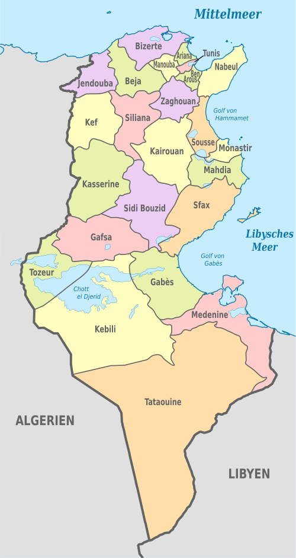

Explorez les 24 gouvernorats de la Tunisie
Cliquez sur le nom d'un gouvernorat pour découvrir ses détails
Afrique du Nord, bordée par la Méditerranée, l'Algérie et la Libye
Environ 12 millions d'habitants répartis sur 24 gouvernorats
Tunis - Centre politique, économique et culturel du pays
163,610 km² du désert du Sahara aux côtes méditerranéennes
